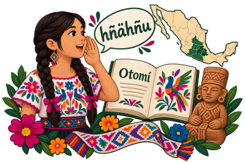
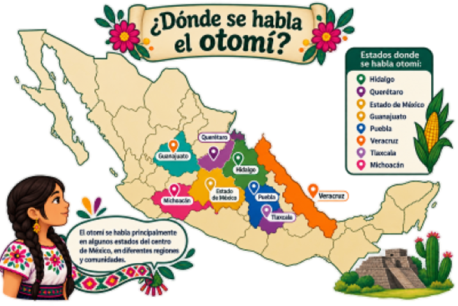
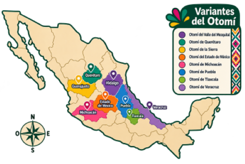
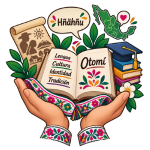
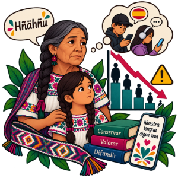

Información sobre el otomí
El otomí es una lengua indígena originaria de México que forma parte de la familia lingüística oto-mangue. Es una lengua que representa una parte importante de la diversidad cultural y lingüística del país.

¿Qué es el otomí?
El otomí es una lengua indígena hablada principalmente en diferentes regiones del centro de México. También puede encontrarse con diferentes nombres, como hñähñu, hñöñhö, ñähñu o yühü, dependiendo de la variante y de la región.
Origen e historia
El otomí tiene una larga historia relacionada con los pueblos originarios de México. Su presencia se remonta a épocas anteriores a la llegada de los españoles y ha formado parte de la identidad cultural de las comunidades que lo hablan.

¿Dónde se habla?
El otomí se habla principalmente en algunas regiones de los estados de Hidalgo, Querétaro, Estado de México, Guanajuato, Puebla, Veracruz, Tlaxcala y Michoacán.
Variantes lingüísticas
El otomí cuenta con diferentes variantes lingüísticas. Estas presentan diferencias en la forma de hablar y en algunas palabras utilizadas por las comunidades.
- Otomí del Valle del Mezquital
- Otomí de Querétaro
- Otomí de la Sierra
- Otomí del Estado de México


Importancia de conservar el otomí
Las lenguas indígenas forman parte del patrimonio cultural de México. Conservar el otomí permite mantener conocimientos, tradiciones, historias y formas de comunicación que han sido transmitidas entre generaciones.
Situación actual
Actualmente, el otomí continúa siendo utilizado por diversas comunidades. Sin embargo, algunas de sus variantes enfrentan situaciones de vulnerabilidad, por lo que es importante promover su conocimiento, uso y preservación.
